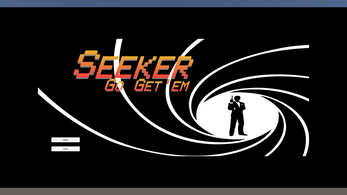

Seeker

Github Itch.io
I pitched the game idea that became Seeker to the CSUMB Game Developers Club, and led the development of the prototype game. A color combination is randomly generated and assigned as the mission target and placed among the crowd.
As the project lead, I assigned tasks to both developers and designers, as well as developed the UI for the game.